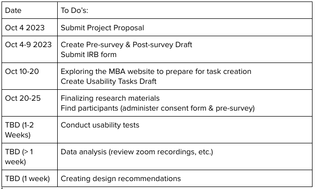

Deliverable #1
Main Page
Background Information
TODO FILL WITH STUFF FROM ORIGINAL WE MAY NEED
Observing Users
User #1
- Current willamette DS 3+1 student
- Interested in doing an MBA at Willamette University, but struggled to find a page with relevant information for his scenario.
- Eventually found a page where he could talk to someone on campus instead of dealing with the difficult website.
User #2
- Non-Willamette student, but interested in the MBA For Professionals program.
- The front page contained a link to descriptions that helped, but she struggled to find information
about the difference between Portland and Salem campuses, and didn't get sufficient information from
rquesting information, and feels turned off from the program and lack of information.
User #3
- Older person, looking to switch from their previous career
- All informational forms they found contained slightly different choices, but appeared the same
- This made them feel uncomfortable picking just one, and worried they were missing something
- They also felt confused by the differences between the Early Career and Career Change programs,
and wanted to make sure they were on the right path for them, but couldn't find a generic form
to ask those questions.
Identifying The Problemn
The Willamette MBA site might be really difficult to navigate for users who are not
familiar with it, which could be a barrier for some students who are interested in finding
out more about MBA programs Willamette offers. There are few important forms in the MBA website
that users should be able to find easily. However, we are not certain that users can access or
find those important forms easily by clicking through the webpage.
To illustrate this more, here are just a few important forms that every prospective MBA applicant might
want to see:
All of these are for slightly different scenarios, all in different places. What fits one prospect
best may be much harder for them to find.
Developing Personas
Consider User #1 and User #2. How should we effectively measure their experience in a way that would
allow us to improve it for them, and for other personas?
Persona #1 (has prior experience)
- Prior Experience: This user is currently already enrolled in a masters program at Willamette.
This means they may already have experience navigating the Willamette MBA page.
- Experience Satisfaction: This user was not satisfied with their experience. The website was confusing
and they fell back on in-person sesources. What objective method
can we use to measure this in our assessment? What things about their backgroud should we consider during this?
- In essence, Persona #1 represents a student with prior experience. This won't be an uncommon persona,
especially at willamette. Prepating adequately for anybody like this will be necessary.
Persona #2 (no prior experience)
- Prior Experience: Separate from Persona #1, this user has no prior experience, either at Willamette or
with the MBA website. It will be totally unfamiliar to them, and these people are likely especially at risk
of being lost, because online is the only resource they may have.
- Experience Satisfaction: This user was able to find necessary information, but not easily. This may
not apply for all Personas, especially those who may have other, easier options lined up,
and these we are at particular risk for losing business from.
- These people especially would benefit, because nobody wants to spend an entire day trying to find
a link to a specific form they need.
Illustrating a Use Case Scenario
In this, we'll take Persona #1 and walk through our current proposed method for evaluating their experience
using our assessment.
Step:
- After finding this persona, we'll make sure they sign our consent form, then send them
the pre-survey to be filled out before we adminster the usability test. In this user's Case
we should now know they have prior experience at willamette and with the MBA site.
- We then schedule and adminster the usability test. This will take about an hour
and will consist of us measuring objective data about their experience.
- At the end, the post-survey should give us specific data about what the user was
thinking during specific parts of the assessment, and should finalize the process for Persona #1.
This would be the process/scenario of our project with a specific persona in mind.
Finding Related Products
There are not really alternatives to the MBA site, but there is a plethora of similar sites,
both for graduate and undergrad degrees at Willamette University.
Appling for the College of Arts and Sciences
The college of arts and sciences has a very different experience. The very first page about applying
lists all scenarios for a student who may be applying to the CAS, and provides a spearate list for each.
This list includes deadlines, the actual application, sending transcripts, reccomendations, and test scores.
Unlike the MBA program, however, links to importamt forms are not as common. This may be because the information is
already all there, or because they're simple harder to find. Program specific information is also supplied,
but in a separate section.
Comparing Products
The CAS application information is very different from the MBA experience. Smply measuring how long it takes
to find information simply isn't a very good way of evaluating the CAS website. The information tends to be
right there. The ideas of using pre and post surveys would still apply, but in a much different manner, because
very few applicants to the CAS will have prior Willamette experience beyond maybe visiting,
but MBA applicants may have spent an entire undergrad at Willamette, making the user cases vastly different.
Overall, our current solution of finding a process to evaluate a website can be generically applied
to many websites, but the specific information we've been given to look for is specific to the Willamette MBA
site. The process itself will be outlined in out High-Level Architecture.
Designing at a High-Level Architecture

In our diagram for our high High-Level we can highlight several key components:
- Pre-Survey: This would be administered before the assessment, and given to participants.
- Researcher: This element records the notes and data from the tasks given to the participants.
- Post-Survey: This is given to participants after the assessment, and is used to collect data.
- Participants: This element is used as the backbone of gathering the data from tasks and surveys.
- Data: This is used by the Researcher to analyze and to create a final design reccomendation.
Justifying Feasibility

Given what is already completed (Submit Proposal, Create Survey Draft, Explore Website) and the timeline
for tasks that need to be completed, the feasbility is very realistic. The estimated times end up with a finishing time
much before the end of the semester, giving adequate buffer time for when things inevitably take longer than
anticipated.
Link to Original Proposal
Proposal
I included this as a supplementary inclusion should anything be missing from this version that may have
been covered in the original.